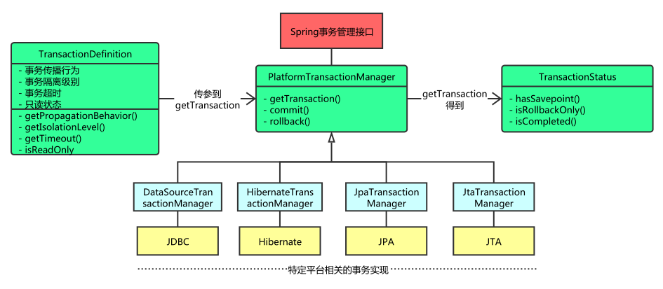

核心接口 Spring事务管理的实现有许多细节，如果对整个接口框架有个大体了解会非常有利于我们理解事务，下面通过讲解Spring的事务接口来了解Spring实现事务的具体策略。

事务管理器 Spring并不直接管理事务，而是提供了多种事务管理器，他们将事务管理的职责委托给Hibernate或者JTA等持久化机制所提供的相关平台框架的事务来实现。
1 2 3 4 5 6 7 8 Public interface PlatformTransactionManager () ... { TransactionStatus getTransaction (TransactionDefinition definition) throws TransactionException ; Void commit (TransactionStatus status) throws TransactionException ; Void rollback (TransactionStatus status) throws TransactionException ; }
从这里可知具体的具体的事务管理机制对Spring来说是透明的，它并不关心那些，那些是对应各个平台需要关心的，所以Spring事务管理的一个优点就是为不同的事务API提供一致的编程模型，如JTA、JDBC、Hibernate、JPA。下面分别介绍各个平台框架实现事务管理的机制。
JDBC事务 如果应用程序中直接使用JDBC来进行持久化，DataSourceTransactionManager会为你处理事务边界。为了使用DataSourceTransactionManager，你需要使用如下的XML将其装配到应用程序的上下文定义中：
1 2 3 <bean id ="transactionManager" class ="org.springframework.jdbc.datasource.DataSourceTransactionManager" > <property name ="dataSource" ref ="dataSource" /> </bean >
实际上，DataSourceTransactionManager是通过调用java.sql.Connection来管理事务，而后者是通过DataSource获取到的。通过调用连接的commit()方法来提交事务，同样，事务失败则通过调用rollback()方法进行回滚。
Hibernate事务 如果应用程序的持久化是通过Hibernate实习的，那么你需要使用HibernateTransactionManager。对于Hibernate3，需要在Spring上下文定义中添加如下的<bean>声明：
1 2 3 <bean id ="transactionManager" class ="org.springframework.orm.hibernate3.HibernateTransactionManager" > <property name ="sessionFactory" ref ="sessionFactory" /> </bean >
sessionFactory属性需要装配一个Hibernate的session工厂，HibernateTransactionManager的实现细节是它将事务管理的职责委托给org.hibernate.Transaction对象，而后者是从Hibernate Session中获取到的。当事务成功完成时，HibernateTransactionManager将会调用Transaction对象的commit()方法，反之，将会调用rollback()方法。
Java持久化API事务（JPA） Hibernate多年来一直是事实上的Java持久化标准，但是现在Java持久化API作为真正的Java持久化标准进入大家的视野。如果你计划使用JPA的话，那你需要使用Spring的JpaTransactionManager来处理事务。你需要在Spring中这样配置JpaTransactionManager：
1 2 3 <bean id ="transactionManager" class ="org.springframework.orm.jpa.JpaTransactionManager" > <property name ="sessionFactory" ref ="sessionFactory" /> </bean >
JpaTransactionManager只需要装配一个JPA实体管理工厂（javax.persistence.EntityManagerFactory接口的任意实现）。JpaTransactionManager将与由工厂所产生的JPA EntityManager合作来构建事务。
Java原生API事务 如果你没有使用以上所述的事务管理，或者是跨越了多个事务管理源（比如两个或者是多个不同的数据源），你就需要使用JtaTransactionManager：
1 2 3 <bean id ="transactionManager" class ="org.springframework.transaction.jta.JtaTransactionManager" > <property name ="transactionManagerName" value ="java:/TransactionManager" /> </bean >
JtaTransactionManager将事务管理的责任委托给javax.transaction.UserTransaction和javax.transaction.TransactionManager对象，其中事务成功完成通过UserTransaction.commit()方法提交，事务失败通过UserTransaction.rollback()方法回滚。
基本事务属性的定义 上面讲到的事务管理器接口PlatformTransactionManager通过getTransaction(TransactionDefinition definition)方法来得到事务，这个方法里面的参数是TransactionDefinition类，这个类就定义了一些基本的事务属性。
而TransactionDefinition接口内容如下：
1 2 3 4 5 6 public interface TransactionDefinition int getPropagationBehavior () int getIsolationLevel () int getTimeout () boolean isReadOnly () }
我们可以发现TransactionDefinition正好用来定义事务属性，下面详细介绍一下各个事务属性。
传播行为 事务的第一个方面是传播行为（propagation behavior）。当事务方法被另一个事务方法调用时，必须指定事务应该如何传播。例如：方法可能继续在现有事务中运行，也可能开启一个新事务，并在自己的事务中运行。Spring定义了七种传播行为：
传播行为
含义
PROPAGATION_REQUIRED
表示当前方法必须运行在事务中。如果当前事务存在，方法将会在该事务中运行。否则，会启动一个新的事务
PROPAGATION_SUPPORTS|表示当前方法不需要事务上下文，但是如果存在当前事务的话，那么该方法会在这个事务中运行|
（1）PROPAGATION_REQUIRED 如果存在一个事务，则支持当前事务。如果没有事务则开启一个新的事务。
1 2 3 4 5 6 methodA{ …… methodB(); …… }
使用spring声明式事务，spring使用AOP来支持声明式事务，会根据事务属性，自动在方法调用之前决定是否开启一个事务，并在方法执行之后决定事务提交或回滚事务。
单独调用methodB方法：
相当于
1 2 3 4 5 6 7 8 9 10 11 12 13 14 15 16 17 18 19 Main{ Connection con=null ; try { con = getConnection(); con.setAutoCommit(false ); methodB(); con.commit(); } Catch(RuntimeException ex) { con.rollback(); } finally { closeCon(); } }
Spring保证在methodB方法中所有的调用都获得到一个相同的连接。在调用methodB时，没有一个存在的事务，所以获得一个新的连接，开启了一个新的事务。
执行效果相当于：
1 2 3 4 5 6 7 8 9 10 11 12 main{ Connection con = null ; try { con = getConnection(); methodA(); con.commit(); } catch (RuntimeException ex) { con.rollback(); } finally { closeCon(); } }
调用MethodA时，环境中没有事务，所以开启一个新的事务.当在MethodA中调用MethodB时，环境中已经有了一个事务，所以methodB就加入当前事务，相当于MethodA和MethodB代码合并，再包围事务。
（2）PROPAGATION_SUPPORTS 如果存在一个事务，支持当前事务。如果没有事务，则非事务的执行。但是对于事务同步的事务管理器，PROPAGATION_SUPPORTS与不使用事务有少许不同。
1 2 3 4 5 6 7 8 9 methodA(){ methodB(); } methodB(){ …… }
单纯的调用methodB时，methodB方法是非事务的执行的。当调用methdA时,methodB则加入了methodA的事务中,事务地执行。
（3）PROPAGATION_MANDATORY 如果已经存在一个事务，支持当前事务。如果没有一个活动的事务，则抛出异常。
1 2 3 4 5 6 7 8 9 methodA(){ methodB(); } methodB(){ …… }
当单独调用methodB时，因为当前没有一个活动的事务，则会抛出异常throw new IllegalTransactionStateException(“Transaction propagation ‘mandatory’ but no existing transaction found”);当调用methodA时，methodB则加入到methodA的事务中，事务地执行。
（4）PROPAGATION_REQUIRES_NEW 总是开启一个新的事务。如果一个事务已经存在，则将这个存在的事务挂起。
1 2 3 4 5 6 7 8 9 10 11 methodA(){ doSomeThingA(); methodB(); doSomeThingB(); } methodB(){ …… }
调用A方法：
相当于
1 2 3 4 5 6 7 8 9 10 11 12 13 14 15 16 17 18 19 20 21 22 23 24 25 26 27 28 29 main(){ TransactionManager tm = null ; try { tm = getTransactionManager(); tm.begin(); Transaction ts1 = tm.getTransaction(); doSomeThing(); tm.suspend(); try { tm.begin(); Transaction ts2 = tm.getTransaction(); methodB(); ts2.commit(); } Catch(RunTimeException ex) { ts2.rollback(); } finally { } tm.resume(ts1); doSomeThingB(); ts1.commit(); } catch (RunTimeException ex) { ts1.rollback(); } finally { } }
在这里，我把ts1称为外层事务，ts2称为内层事务。从上面的代码可以看出，ts2与ts1是两个独立的事务，互不相干。Ts2是否成功并不依赖于 ts1。如果methodA方法在调用methodB方法后的doSomeThingB方法失败了，而methodB方法所做的结果依然被提交。而除了 methodB之外的其它代码导致的结果却被回滚了。使用PROPAGATION_REQUIRES_NEW,需要使用 JtaTransactionManager作为事务管理器。
（5）PROPAGATION_NOT_SUPPORTED 总是非事务地执行，并挂起任何存在的事务。使用PROPAGATION_NOT_SUPPORTED,也需要使用JtaTransactionManager作为事务管理器。（代码示例同上，可同理推出）
（6）PROPAGATION_NEVER 总是非事务地执行，如果存在一个活动事务，则抛出异常。
（7）PROPAGATION_NESTED如果一个活动的事务存在，则运行在一个嵌套的事务中. 如果没有活动事务, 则按TransactionDefinition.PROPAGATION_REQUIRED 属性执行。这是一个嵌套事务,使用JDBC 3.0驱动时,仅仅支持DataSourceTransactionManager作为事务管理器。需要JDBC 驱动的java.sql.Savepoint类。有一些JTA的事务管理器实现可能也提供了同样的功能。使用PROPAGATION_NESTED，还需要把PlatformTransactionManager的nestedTransactionAllowed属性设为true;而 nestedTransactionAllowed属性值默认为false。
1 2 3 4 5 6 7 8 9 10 11 methodA(){ doSomeThingA(); methodB(); doSomeThingB(); } methodB(){ …… }
如果单独调用methodB方法，则按REQUIRED属性执行。如果调用methodA方法，相当于下面的效果：
1 2 3 4 5 6 7 8 9 10 11 12 13 14 15 16 17 18 19 20 21 22 23 main(){ Connection con = null ; Savepoint savepoint = null ; try { con = getConnection(); con.setAutoCommit(false ); doSomeThingA(); savepoint = con2.setSavepoint(); try { methodB(); } catch (RuntimeException ex) { con.rollback(savepoint); } finally { } doSomeThingB(); con.commit(); } catch (RuntimeException ex) { con.rollback(); } finally { } }
当methodB方法调用之前，调用setSavepoint方法，保存当前的状态到savepoint。如果methodB方法调用失败，则恢复到之前保存的状态。但是需要注意的是，这时的事务并没有进行提交，如果后续的代码(doSomeThingB()方法)调用失败，则回滚包括methodB方法的所有操作。
嵌套事务一个非常重要的概念就是内层事务依赖于外层事务。外层事务失败时，会回滚内层事务所做的动作。而内层事务操作失败并不会引起外层事务的回滚，只是回滚自己。
PROPAGATION_NESTED 与PROPAGATION_REQUIRES_NEW的区别:它们非常类似,都像一个嵌套事务，如果不存在一个活动的事务，都会开启一个新的事务。使用 PROPAGATION_REQUIRES_NEW时，内层事务与外层事务就像两个独立的事务一样，一旦内层事务进行了提交后，外层事务不能对其进行回滚。两个事务互不影响。两个事务不是一个真正的嵌套事务。同时它需要JTA事务管理器的支持。
使用PROPAGATION_NESTED时，外层事务的回滚可以引起内层事务的回滚。而内层事务的异常并不会导致外层事务的回滚，它是一个真正的嵌套事务。DataSourceTransactionManager使用savepoint支持PROPAGATION_NESTED时，需要JDBC 3.0以上驱动及1.4以上的JDK版本支持。其它的JTA TrasactionManager实现可能有不同的支持方式。
PROPAGATION_REQUIRES_NEW 启动一个新的, 不依赖于环境的 “内部” 事务. 这个事务将被完全 commited 或 rolled back 而不依赖于外部事务, 它拥有自己的隔离范围, 自己的锁, 等等. 当内部事务开始执行时, 外部事务将被挂起, 内务事务结束时, 外部事务将继续执行。
另一方面, PROPAGATION_NESTED 开始一个 “嵌套的” 事务, 它是已经存在事务的一个真正的子事务. 潜套事务开始执行时, 它将取得一个 savepoint. 如果这个嵌套事务失败, 我们将回滚到此 savepoint. 潜套事务是外部事务的一部分, 只有外部事务结束后它才会被提交。
由此可见, PROPAGATION_REQUIRES_NEW 和 PROPAGATION_NESTED 的最大区别在于, PROPAGATION_REQUIRES_NEW 完全是一个新的事务, 而 PROPAGATION_NESTED 则是外部事务的子事务, 如果外部事务 commit, 嵌套事务也会被 commit, 这个规则同样适用于 roll back.
PROPAGATION_REQUIRED应该是我们首先的事务传播行为。它能够满足我们大多数的事务需求。
隔离级别（之前已经整理过，可跳过） 事务的第二个维度就是隔离级别（isolation level）。隔离级别定义了一个事务可能受其他并发事务影响的程度。
并发事务引起的问题 在典型的应用程序中，多个事务并发运行，经常会操作相同的数据来完成各自的任务。并发虽然是必须的，但可能会导致一下的问题。
脏读（Dirty reads）——脏读发生在一个事务读取了另一个事务改写但尚未提交的数据时。如果改写在稍后被回滚了，那么第一个事务获取的数据就是无效的。
不可重复读（Nonrepeatable read）——不可重复读发生在一个事务执行相同的查询两次或两次以上，但是每次都得到不同的数据时。这通常是因为另一个并发事务在两次查询期间进行了更新。
幻读（Phantom read）——幻读与不可重复读类似。它发生在一个事务（T1）读取了几行数据，接着另一个并发事务（T2）插入了一些数据时。在随后的查询中，第一个事务（T1）就会发现多了一些原本不存在的记录。
不可重复读与幻读的区别
不可重复读的重点是修改:
1 2 con1 = getConnection(); select salary from employee empId ="Mary";
在事务2中，这时财务人员修改了Mary的工资为2000,并提交了事务.
1 2 3 con2 = getConnection(); update employee set salary = 2000; con2.commit();
在事务1中，Mary 再次读取自己的工资时，工资变为了2000
1 2 //con1 select salary from employee empId ="Mary";
在一个事务中前后两次读取的结果并不一致，导致了不可重复读。
幻读的重点在于新增或者删除：
1 2 con1 = getConnection(); Select * from employee where salary =1000;
共读取10条记录
这时另一个事务向employee表插入了一条员工记录，工资也为1000
1 2 3 con2 = getConnection(); Insert into employee(empId,salary) values("Lili",1000); con2.commit();
事务1再次读取所有工资为1000的员工
1 2 //con1 select * from employee where salary =1000;
共读取到了11条记录，这就产生了幻像读。
从总的结果来看, 似乎不可重复读和幻读都表现为两次读取的结果不一致。但如果你从控制的角度来看, 两者的区别就比较大。
隔离级别
隔离级别
含义
ISOLATION_DEFAULT
使用后端数据库默认的隔离级别
ISOLATION_READ_UNCOMMITTED
最低的隔离级别，允许读取尚未提交的数据变更，可能会导致脏读、幻读或不可重复读
ISOLATION_READ_COMMITTED
允许读取并发事务已经提交的数据，可以阻止脏读，但是幻读或不可重复读仍有可能发生
ISOLATION_REPEATABLE_READ
对同一字段的多次读取结果都是一致的，除非数据是被本身事务自己所修改，可以阻止脏读和不可重复读，但幻读仍有可能发生
ISOLATION_SERIALIZABLE
最高的隔离级别，完全服从ACID的隔离级别，确保阻止脏读、不可重复读以及幻读，也是最慢的事务隔离级别，因为它通常是通过完全锁定事务相关的数据库表来实现的
只读 事务的第三个特性是它是否为只读事务。如果事务只对后端的数据库进行该操作，数据库可以利用事务的只读特性来进行一些特定的优化。通过将事务设置为只读，你就可以给数据库一个机会，让它应用它认为合适的优化措施。
“只读事务”并不是一个强制选项，它只是一个“暗示”，提示数据库驱动程序和数据库系统，这个事务并不包含更改数据的操作，那么JDBC驱动程序和数据库就有可能根据这种情况对该事务进行一些特定的优化，比方说不安排相应的数据库锁，以减轻事务对数据库的压力，毕竟事务也是要消耗数据库的资源的。
但是你非要在“只读事务”里面修改数据，也并非不可以，只不过对于数据一致性的保护不像“读写事务”那样保险而已。
因此，“只读事务”仅仅是一个性能优化的推荐配置而已，并非强制你要这样做不可
事务超时 为了使应用程序很好地运行，事务不能运行太长的时间。因为事务可能涉及对后端数据库的锁定，所以长时间的事务会不必要的占用数据库资源。事务超时就是事务的一个定时器，在特定时间内事务如果没有执行完毕，那么就会自动回滚，而不是一直等待其结束。
回滚规则 事务五边形的最后一个方面是一组规则，这些规则定义了哪些异常会导致事务回滚而哪些不会。默认情况下，事务只有遇到运行期异常时才会回滚，而在遇到检查型异常时不会回滚（这一行为与EJB的回滚行为是一致的）
事务状态 上面讲到的调用PlatformTransactionManager接口的getTransaction()的方法得到的是TransactionStatus接口的一个实现，这个接口的内容如下：
1 2 3 4 5 6 7 public interface TransactionStatus{ boolean isNewTransaction(); // 是否是新的事物 boolean hasSavepoint(); // 是否有恢复点 void setRollbackOnly(); // 设置为只回滚 boolean isRollbackOnly(); // 是否为只回滚 boolean isCompleted; // 是否已完成 }
可以发现这个接口描述的是一些处理事务提供简单的控制事务执行和查询事务状态的方法，在回滚或提交的时候需要应用对应的事务状态。
编程式事务 编程式和声明式事务的区别 Spring提供了对编程式事务和声明式事务的支持，编程式事务允许用户在代码中精确定义事务的边界，而声明式事务（基于AOP）有助于用户将操作与事务规则进行解耦。
如何实现编程式事务？ Spring提供两种方式的编程式事务管理，分别是：使用TransactionTemplate和直接使用PlatformTransactionManager。
使用TransactionTemplate 采用TransactionTemplate和采用其他Spring模板，如JdbcTempalte和HibernateTemplate是一样的方法。它使用回调方法，把应用程序从处理取得和释放资源中解脱出来。如同其他模板，TransactionTemplate是线程安全的。代码片段：
1 2 3 4 5 6 7 8 TransactionTemplate tt = new TransactionTemplate(); // 新建一个TransactionTemplate Object result = tt.execute( new TransactionCallback(){ public Object doTransaction(TransactionStatus status){ updateOperation(); return resultOfUpdateOperation(); } }); // 执行execute方法进行事务管理
使用TransactionCallback()可以返回一个值。如果使用TransactionCallbackWithoutResult则没有返回值。
示例代码如下：
1 2 3 4 5 6 7 8 9 10 11 12 DataSourceTransactionManager dataSourceTransactionManager = new DataSourceTransactionManager(); //定义一个某个框架平台的TransactionManager，如JDBC、Hibernate dataSourceTransactionManager.setDataSource(this.getJdbcTemplate().getDataSource()); // 设置数据源 DefaultTransactionDefinition transDef = new DefaultTransactionDefinition(); // 定义事务属性 transDef.setPropagationBehavior(DefaultTransactionDefinition.PROPAGATION_REQUIRED); // 设置传播行为属性 TransactionStatus status = dataSourceTransactionManager.getTransaction(transDef); // 获得事务状态 try { // 数据库操作 dataSourceTransactionManager.commit(status);// 提交 } catch (Exception e) { dataSourceTransactionManager.rollback(status);// 回滚 }
声明式事务 配置方式 注：以下配置代码参考自Spring事务配置的五种方式
根据代理机制的不同，总结了五种Spring事务的配置方式，配置文件如下：
（1）每个Bean都有一个代理
1 2 3 4 5 6 7 8 9 10 11 12 13 14 15 16 17 18 19 20 21 22 23 24 25 26 27 28 29 30 31 32 33 34 35 36 37 38 39 40 41 42 <?xml version="1.0" encoding="UTF-8"?> <beans xmlns ="http://www.springframework.org/schema/beans" xmlns:xsi ="http://www.w3.org/2001/XMLSchema-instance" xmlns:context ="http://www.springframework.org/schema/context" xmlns:aop ="http://www.springframework.org/schema/aop" xsi:schemaLocation ="http://www.springframework.org/schema/beans http://www.springframework.org/schema/beans/spring-beans-2.5.xsd http://www.springframework.org/schema/context http://www.springframework.org/schema/context/spring-context-2.5.xsd http://www.springframework.org/schema/aop http://www.springframework.org/schema/aop/spring-aop-2.5.xsd" > <bean id ="sessionFactory" class ="org.springframework.orm.hibernate3.LocalSessionFactoryBean" > <property name ="configLocation" value ="classpath:hibernate.cfg.xml" /> <property name ="configurationClass" value ="org.hibernate.cfg.AnnotationConfiguration" /> </bean > <bean id ="transactionManager" class ="org.springframework.orm.hibernate3.HibernateTransactionManager" > <property name ="sessionFactory" ref ="sessionFactory" /> </bean > <bean id ="userDaoTarget" class ="com.bluesky.spring.dao.UserDaoImpl" > <property name ="sessionFactory" ref ="sessionFactory" /> </bean > <bean id ="userDao" class ="org.springframework.transaction.interceptor.TransactionProxyFactoryBean" > <property name ="transactionManager" ref ="transactionManager" /> <property name ="target" ref ="userDaoTarget" /> <property name ="proxyInterfaces" value ="com.bluesky.spring.dao.GeneratorDao" /> <property name ="transactionAttributes" > <props > <prop key ="*" > PROPAGATION_REQUIRED</prop > </props > </property > </bean > </beans >
（2）所有Bean共享一个代理基类
1 2 3 4 5 6 7 8 9 10 11 12 13 14 15 16 17 18 19 20 21 22 23 24 25 26 27 28 29 30 31 32 33 34 35 36 37 38 39 40 41 42 43 44 45 <?xml version="1.0" encoding="UTF-8"?> <beans xmlns ="http://www.springframework.org/schema/beans" xmlns:xsi ="http://www.w3.org/2001/XMLSchema-instance" xmlns:context ="http://www.springframework.org/schema/context" xmlns:aop ="http://www.springframework.org/schema/aop" xsi:schemaLocation ="http://www.springframework.org/schema/beans http://www.springframework.org/schema/beans/spring-beans-2.5.xsd http://www.springframework.org/schema/context http://www.springframework.org/schema/context/spring-context-2.5.xsd http://www.springframework.org/schema/aop http://www.springframework.org/schema/aop/spring-aop-2.5.xsd" > <bean id ="sessionFactory" class ="org.springframework.orm.hibernate3.LocalSessionFactoryBean" > <property name ="configLocation" value ="classpath:hibernate.cfg.xml" /> <property name ="configurationClass" value ="org.hibernate.cfg.AnnotationConfiguration" /> </bean > <bean id ="transactionManager" class ="org.springframework.orm.hibernate3.HibernateTransactionManager" > <property name ="sessionFactory" ref ="sessionFactory" /> </bean > <bean id ="transactionBase" class ="org.springframework.transaction.interceptor.TransactionProxyFactoryBean" lazy-init ="true" abstract ="true" > <property name ="transactionManager" ref ="transactionManager" /> <property name ="transactionAttributes" > <props > <prop key ="*" > PROPAGATION_REQUIRED</prop > </props > </property > </bean > <bean id ="userDaoTarget" class ="com.bluesky.spring.dao.UserDaoImpl" > <property name ="sessionFactory" ref ="sessionFactory" /> </bean > <bean id ="userDao" parent ="transactionBase" > <property name ="target" ref ="userDaoTarget" /> </bean > </beans >
（3）使用拦截器
1 2 3 4 5 6 7 8 9 10 11 12 13 14 15 16 17 18 19 20 21 22 23 24 25 26 27 28 29 30 31 32 33 34 35 36 37 38 39 40 41 42 43 44 45 46 47 48 49 50 51 52 <?xml version="1.0" encoding="UTF-8"?> <beans xmlns ="http://www.springframework.org/schema/beans" xmlns:xsi ="http://www.w3.org/2001/XMLSchema-instance" xmlns:context ="http://www.springframework.org/schema/context" xmlns:aop ="http://www.springframework.org/schema/aop" xsi:schemaLocation ="http://www.springframework.org/schema/beans http://www.springframework.org/schema/beans/spring-beans-2.5.xsd http://www.springframework.org/schema/context http://www.springframework.org/schema/context/spring-context-2.5.xsd http://www.springframework.org/schema/aop http://www.springframework.org/schema/aop/spring-aop-2.5.xsd" > <bean id ="sessionFactory" class ="org.springframework.orm.hibernate3.LocalSessionFactoryBean" > <property name ="configLocation" value ="classpath:hibernate.cfg.xml" /> <property name ="configurationClass" value ="org.hibernate.cfg.AnnotationConfiguration" /> </bean > <bean id ="transactionManager" class ="org.springframework.orm.hibernate3.HibernateTransactionManager" > <property name ="sessionFactory" ref ="sessionFactory" /> </bean > <bean id ="transactionInterceptor" class ="org.springframework.transaction.interceptor.TransactionInterceptor" > <property name ="transactionManager" ref ="transactionManager" /> <property name ="transactionAttributes" > <props > <prop key ="*" > PROPAGATION_REQUIRED</prop > </props > </property > </bean > <bean class ="org.springframework.aop.framework.autoproxy.BeanNameAutoProxyCreator" > <property name ="beanNames" > <list > <value > *Dao</value > </list > </property > <property name ="interceptorNames" > <list > <value > transactionInterceptor</value > </list > </property > </bean > <bean id ="userDao" class ="com.bluesky.spring.dao.UserDaoImpl" > <property name ="sessionFactory" ref ="sessionFactory" /> </bean > </beans >
（4）使用tx标签配置的拦截器
1 2 3 4 5 6 7 8 9 10 11 12 13 14 15 16 17 18 19 20 21 22 23 24 25 26 27 28 29 30 31 32 33 34 35 36 37 38 39 40 41 42 43 44 45 46 47 48 <?xml version="1.0" encoding="UTF-8"?> <beans xmlns ="http://www.springframework.org/schema/beans" xmlns:xsi ="http://www.w3.org/2001/XMLSchema-instance" xmlns:aop ="http://www.springframework.org/schema/aop" xmlns:tx ="http://www.springframework.org/schema/tx" xsi:schemaLocation =" http://www.springframework.org/schema/beans http://www.springframework.org/schema/beans/spring-beans-2.5.xsd http://www.springframework.org/schema/tx http://www.springframework.org/schema/tx/spring-tx-2.5.xsd http://www.springframework.org/schema/aop http://www.springframework.org/schema/aop/spring-aop-2.5.xsd" > <bean id ="fooService" class ="x.y.service.DefaultFooService" /> <tx:advice id ="txAdvice" transaction-manager ="txManager" > <tx:attributes > <tx:method name ="get*" read-only ="true" /> <tx:method name ="*" /> </tx:attributes > </tx:advice > <aop:config > <aop:pointcut id ="fooServiceOperation" expression ="execution(* x.y.service.FooService.*(..))" /> <aop:advisor advice-ref ="txAdvice" pointcut-ref ="fooServiceOperation" /> </aop:config > <bean id ="dataSource" class ="org.apache.commons.dbcp.BasicDataSource" destroy-method ="close" > <property name ="driverClassName" value ="oracle.jdbc.driver.OracleDriver" /> <property name ="url" value ="jdbc:oracle:thin:@rj-t42:1521:elvis" /> <property name ="username" value ="scott" /> <property name ="password" value ="tiger" /> </bean > <bean id ="txManager" class ="org.springframework.jdbc.datasource.DataSourceTransactionManager" > <property name ="dataSource" ref ="dataSource" /> </bean > </beans >
首先我们应该要把服务对象’fooService’ 声明成一个bean，我们要把一个服务对象（’fooService’ bean）做成事务性的。
我们就应该首先在声明一个事务管理的建议，用什么来管理，spring给我们提供了事务封装，这个就封装在了<tx:advice/>中，
我们上边用的这个事务建议给我们提供了一个transaction-manager属性，用他可以指定我们用谁来管理我们的事务。
为一个指向 PlatformTransactionManager bean的名字（这里指 ‘txManager’）， 该bean将会真正管理事务。上面用的事务管理类是用的jdbc中提供的事务管理，当然这里也可以指定为hibernate管理。
<aop:config/> 的定义， 它确保由 ‘txAdvice’ bean定义的事务通知在应用中合适的点被执行。
我们把该切面叫做 ‘fooServiceOperation’。<aop:pointcut/>元素定义是AspectJ的切面表示法，
表示当 ‘fooServiceOperation’ 执行时，’txAdvice’ 定义的通知逻辑将被执行。大体流程就是这样的了。
<tx:advice/> 有关的设置
通过<tx:advice/> 标签来指定不同的事务性设置。默认的 <tx:advice/>设置如下：
事务传播设置是 REQUIRED
隔离级别是DEFAULT
事务是 读/写
事务超时默认是依赖于事务系统的，或者事务超时没有被支持。
任何 RuntimeException 将触发事务回滚，但是任何 checked Exception 将不触发事务回滚
这些默认的设置当然也是可以被改变的。<tx:advice/> 和 <tx:attributes/> 标签里的 <tx:method/> 各种属性设置总结如下：
<tx:method/>有关的设置
属性
是否需要？
默认值
描述
name
是
与事务属性关联的方法名。通配符（）可以用来指定一批关联到相同的事务属性的方法。 如：’get ‘、’handle‘、’on Event’等等。
propagation
不
REQUIRED
事务传播行为
isolation
不
DEFAULT
事务隔离级别
timeout
不
-1
事务超时的时间（以秒为单位）
read-only
不
false
事务是否只读？
rollback-for
不
将被触发进行回滚的 Exception(s)；以逗号分开。 如：’com.foo.MyBusinessException,ServletException’
no-rollback-for
不
不 被触发进行回滚的 Exception(s)；以逗号分开。 如：’com.foo.MyBusinessException,ServletException’
（5）全注解
1 2 3 4 5 6 7 8 9 10 11 12 13 14 15 16 17 18 19 20 21 22 23 24 25 26 27 28 29 30 31 <?xml version="1.0" encoding="UTF-8"?> <beans xmlns ="http://www.springframework.org/schema/beans" xmlns:xsi ="http://www.w3.org/2001/XMLSchema-instance" xmlns:context ="http://www.springframework.org/schema/context" xmlns:aop ="http://www.springframework.org/schema/aop" xmlns:tx ="http://www.springframework.org/schema/tx" xsi:schemaLocation ="http://www.springframework.org/schema/beans http://www.springframework.org/schema/beans/spring-beans-2.5.xsd http://www.springframework.org/schema/context http://www.springframework.org/schema/context/spring-context-2.5.xsd http://www.springframework.org/schema/aop http://www.springframework.org/schema/aop/spring-aop-2.5.xsd http://www.springframework.org/schema/tx http://www.springframework.org/schema/tx/spring-tx-2.5.xsd" > <context:annotation-config /> <context:component-scan base-package ="com.bluesky" /> <tx:annotation-driven transaction-manager ="transactionManager" /> <bean id ="sessionFactory" class ="org.springframework.orm.hibernate3.LocalSessionFactoryBean" > <property name ="configLocation" value ="classpath:hibernate.cfg.xml" /> <property name ="configurationClass" value ="org.hibernate.cfg.AnnotationConfiguration" /> </bean > <bean id ="transactionManager" class ="org.springframework.orm.hibernate3.HibernateTransactionManager" > <property name ="sessionFactory" ref ="sessionFactory" /> </bean > </beans >
此时在DAO上需加上@Transactional注解，如下：
1 2 3 4 5 6 7 8 9 10 11 12 13 14 15 16 17 18 19 package com.bluesky.spring.dao;import java.util.List;import org.hibernate.SessionFactory;import org.springframework.beans.factory.annotation.Autowired;import org.springframework.orm.hibernate3.support.HibernateDaoSupport;import org.springframework.stereotype.Component;import com.bluesky.spring.domain.User;@Transactional @Component ("userDao" )public class UserDaoImpl extends HibernateDaoSupport implements UserDao public List<User> listUsers () return this .getSession().createQuery("from User" ).list(); } }
一个声明式事务的实例（注解） 注：该实例参考自Spring中的事务管理实例详解
首先是数据库表
然后是XML配置
1 2 3 4 5 6 7 8 9 10 11 12 13 14 15 16 17 18 19 20 21 22 23 24 25 <beans xmlns ="http://www.springframework.org/schema/beans" xmlns:xsi ="http://www.w3.org/2001/XMLSchema-instance" xmlns:context ="http://www.springframework.org/schema/context" xmlns:aop ="http://www.springframework.org/schema/aop" xmlns:tx ="http://www.springframework.org/schema/tx" xsi:schemaLocation ="http://www.springframework.org/schema/beans http://www.springframework.org/schema/beans/spring-beans-3.0.xsd http://www.springframework.org/schema/context http://www.springframework.org/schema/context/spring-context-3.0.xsd http://www.springframework.org/schema/aop http://www.springframework.org/schema/aop/spring-aop-2.5.xsd http://www.springframework.org/schema/tx http://www.springframework.org/schema/tx/spring-tx-2.5.xsd" > <import resource ="applicationContext-db.xml" /> <context:component-scan base-package ="com.springinaction.transaction" > </context:component-scan > <tx:annotation-driven transaction-manager ="txManager" /> <bean id ="transactionManager" class ="org.springframework.jdbc.datasource.DataSourceTransactionManager" > <property name ="dataSource" ref ="dataSource" /> </bean > </beans >
使用的类
1 2 3 4 5 6 7 8 9 10 package com.springinaction.transaction;public interface BookShopDao public int findBookPriceByIsbn (String isbn) public void updateBookStock (String isbn) public void updateUserAccount (String username, int price) }
BookShopDaoImpl
1 2 3 4 5 6 7 8 9 10 11 12 13 14 15 16 17 18 19 20 21 22 23 24 25 26 27 28 29 30 31 32 33 34 35 36 37 38 39 40 41 42 43 44 package com.springinaction.transaction;import org.springframework.beans.factory.annotation.Autowired;import org.springframework.jdbc.core.JdbcTemplate;import org.springframework.stereotype.Repository;@Repository ("bookShopDao" )public class BookShopDaoImpl implements BookShopDao @Autowired private JdbcTemplate JdbcTemplate; @Override public int findBookPriceByIsbn (String isbn) String sql = "SELECT price FROM book WHERE isbn = ?" ; return JdbcTemplate.queryForObject(sql, Integer.class, isbn); } @Override public void updateBookStock (String isbn) String sql2 = "SELECT stock FROM book_stock WHERE isbn = ?" ; int stock = JdbcTemplate.queryForObject(sql2, Integer.class, isbn); if (stock == 0 ) { throw new BookStockException("库存不足！" ); } String sql = "UPDATE book_stock SET stock = stock - 1 WHERE isbn = ?" ; JdbcTemplate.update(sql, isbn); } @Override public void updateUserAccount (String username, int price) String sql2 = "SELECT balance FROM account WHERE username = ?" ; int balance = JdbcTemplate.queryForObject(sql2, Integer.class, username); if (balance < price) { throw new UserAccountException("余额不足！" ); } String sql = "UPDATE account SET balance = balance - ? WHERE username = ?" ; JdbcTemplate.update(sql, price, username); } }
BookShopService
1 2 3 4 package com.springinaction.transaction;public interface BookShopService public void purchase (String username, String isbn) }
BookShopServiceImpl
1 2 3 4 5 6 7 8 9 10 11 12 13 14 15 16 17 18 19 20 21 22 23 24 25 26 27 28 29 30 31 32 33 34 35 36 37 38 39 package com.springinaction.transaction;import org.springframework.beans.factory.annotation.Autowired;import org.springframework.stereotype.Service;import org.springframework.transaction.annotation.Isolation;import org.springframework.transaction.annotation.Propagation;import org.springframework.transaction.annotation.Transactional;@Service ("bookShopService" )public class BookShopServiceImpl implements BookShopService @Autowired private BookShopDao bookShopDao; @Transactional (propagation=Propagation.REQUIRES_NEW, isolation=Isolation.READ_COMMITTED, noRollbackFor={UserAccountException.class}, readOnly=true , timeout=3 ) @Override public void purchase (String username, String isbn) int price = bookShopDao.findBookPriceByIsbn(isbn); bookShopDao.updateBookStock(isbn); bookShopDao.updateUserAccount(username, price); } }
Cashier
1 2 3 4 5 package com.springinaction.transaction;import java.util.List;public interface Cashier public void checkout (String username, List<String>isbns) }
CashierImpl：CashierImpl.checkout和bookShopService.purchase联合测试了事务的传播行为
1 2 3 4 5 6 7 8 9 10 11 12 13 14 15 16 17 18 19 20 21 package com.springinaction.transaction;import java.util.List;import org.springframework.beans.factory.annotation.Autowired;import org.springframework.stereotype.Service;import org.springframework.transaction.annotation.Transactional;@Service ("cashier" )public class CashierImpl implements Cashier @Autowired private BookShopService bookShopService; @Transactional @Override public void checkout (String username, List<String> isbns) for (String isbn : isbns) { bookShopService.purchase(username, isbn); } } }
BookStockException
1 2 3 4 5 6 7 8 9 10 11 12 13 14 15 16 17 18 19 20 21 22 23 24 25 26 27 28 29 30 31 32 package com.springinaction.transaction;public class BookStockException extends RuntimeException private static final long serialVersionUID = 1L ; public BookStockException () super (); } public BookStockException (String arg0, Throwable arg1, boolean arg2, boolean arg3) super (arg0, arg1, arg2, arg3); } public BookStockException (String arg0, Throwable arg1) super (arg0, arg1); } public BookStockException (String arg0) super (arg0); } public BookStockException (Throwable arg0) super (arg0); } }
UserAccountException
1 2 3 4 5 6 7 8 9 10 11 12 13 14 15 16 17 18 19 20 21 22 23 24 25 26 27 28 29 30 31 package com.springinaction.transaction;public class UserAccountException extends RuntimeException private static final long serialVersionUID = 1L ; public UserAccountException () super (); } public UserAccountException (String arg0, Throwable arg1, boolean arg2, boolean arg3) super (arg0, arg1, arg2, arg3); } public UserAccountException (String arg0, Throwable arg1) super (arg0, arg1); } public UserAccountException (String arg0) super (arg0); } public UserAccountException (Throwable arg0) super (arg0); } }
测试类
1 2 3 4 5 6 7 8 9 10 11 12 13 14 15 16 17 18 19 20 21 22 23 24 25 26 27 28 29 30 31 32 33 34 35 36 37 38 39 40 41 42 43 44 45 package com.springinaction.transaction;import java.util.Arrays;import org.junit.Test;import org.springframework.context.ApplicationContext;import org.springframework.context.support.ClassPathXmlApplicationContext;public class SpringTransitionTest private ApplicationContext ctx = null ; private BookShopDao bookShopDao = null ; private BookShopService bookShopService = null ; private Cashier cashier = null ; { ctx = new ClassPathXmlApplicationContext("config/transaction.xml" ); bookShopDao = ctx.getBean(BookShopDao.class); bookShopService = ctx.getBean(BookShopService.class); cashier = ctx.getBean(Cashier.class); } @Test public void testBookShopDaoFindPriceByIsbn () System.out.println(bookShopDao.findBookPriceByIsbn("1001" )); } @Test public void testBookShopDaoUpdateBookStock () bookShopDao.updateBookStock("1001" ); } @Test public void testBookShopDaoUpdateUserAccount () bookShopDao.updateUserAccount("AA" , 100 ); } @Test public void testBookShopService () bookShopService.purchase("AA" , "1001" ); } @Test public void testTransactionPropagation () cashier.checkout("AA" , Arrays.asList("1001" , "1002" )); } }